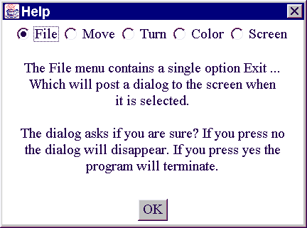
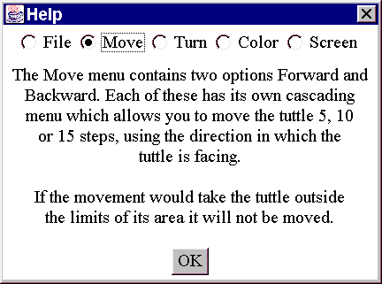
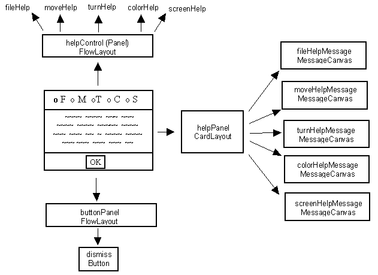
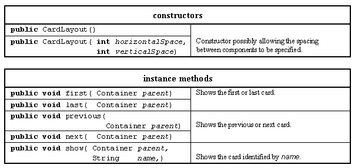

The HelpDialog class has a somewhat similar overall pattern to the other two dialogs but uses the remaining layout manager, the CardLayout class, to allow the various help panels to be displayed. The appearance of the helpDialog for this applet is shown in Figure 6.9.
 
Figure 6.9 The helpDialog, showing help for the File and Move menus.
The dialog consists of a set of radio buttons at the top, a dismiss button at the bottom and an area for the help messages to be displayed in the middle. When a radio button is pressed the help message in the middle will change, as indicated in the illustration. The middle part of the dialog, providing the help messages, is implemented using a CardLayout manager. A CardLayout manager supports a sequence of components, any of which can be selected for display by using the methods supplied by the manager. The declaration and instance attributes of the MenuBarTuttleHelpDialog class is as follows.

Figure 6.10 MenubarTuttleHelpDialog, Components and layout control.
The Components required, and the layout management, of the MenuBarTuttleHelpDialog are illustrated in Figure 6.10. The Dialog itself has a default BorderLayout; with a helpControl Panel in its "North" location, a helpPanel in its "Center" location and a buttonPanel in its "South" location. The helpControl Panel has a FlowLayout and contains five CheckBox instances, the buttonPanel also has a FlowLayout and contains a single Button instance called dismiss. The helpPanel has a CardLayout and contains five MessageCanvas instances, only one of which will ever be visible at any instant. These Components are declared as instance attributes of the class, in the header of its declaration, as follows.
0018 class MenuBarTuttleHelpDialog extends Dialog
0019 implements ActionListener,
0020 ItemListener {
0021
0022 private static final String FILE = "File";
0023 private static final String MOVE = "Move";
0024 private static final String TURN = "Turn";
0025 private static final String COLOR = "Color";
0026 private static final String SCREEN = "Screen";
0027
0028 private Panel helpControl;
0029 private CheckboxGroup theGroup;
0030 private Checkbox fileHelp;
0031 private Checkbox moveHelp;
0032 private Checkbox turnHelp;
0033 private Checkbox colorHelp;
0034 private Checkbox screenHelp;
0035
0036 private Panel helpPanel;
0037 private CardLayout manager;
0038 private MessageCanvas fileHelpMessage;
0039 private MessageCanvas moveHelpMessage;
0040 private MessageCanvas turnHelpMessage;
0041 private MessageCanvas colorHelpMessage;
0042 private MessageCanvas screenHelpMessage;
0043
0044 private Panel buttonPanel;
0045 private Button dismiss;
0046
0047 private Window itsParentWindow;
The class implements the ActionListener interface in order to respond to the user pressing its dismiss button, by un-posting the dialog, and implements the ItemListener interface in order to be able to respond to the user pressing one of the Checkbox buttons, as will be described below. The use of the manifest values, declared on lines 0022 to 0026, and the instance attributes, declared on lines 0028 to 0047, will be described as the constructor, which commences as follows, is explained.
0051 protected MenuBarTuttleHelpDialog( Frame itsParentFrame) {
0052
0053 super( itsParentFrame, "Help", false);
0054 itsParentWindow = (Window) itsParentFrame;
0055 this.setFont( itsParentFrame.getFont());
0056
0057 helpControl = new Panel();
0058 helpControl.setBackground( Color.white);
0059
0060 theGroup = new CheckboxGroup();
0061 fileHelp = new Checkbox( FILE, theGroup, true);
0062 fileHelp.addItemListener( this);
0063 helpControl.add( fileHelp);
0064
0065 moveHelp = new Checkbox( MOVE, theGroup, false);
0066 moveHelp.addItemListener( this);
0067 helpControl.add( moveHelp);
0068
0069 turnHelp = new Checkbox( TURN, theGroup, false);
0070 turnHelp.addItemListener( this);
0071 helpControl.add( turnHelp);
0072
0073 colorHelp = new Checkbox( COLOR, theGroup, false);
0074 colorHelp.addItemListener( this);
0075 helpControl.add( colorHelp);
0076
0077 screenHelp = new Checkbox( SCREEN, theGroup, false);
0078 screenHelp.addItemListener( this);
0079 helpControl.add( screenHelp);
The first stage of the constructor, on lines 0052 to 0054, constructs and configures the Dialog as before. Lines 0057 to 0079 then construct the five Checkbox items as members of the same CheckboxGroup, theGroup, in a manner comparable to the Checkbox example in Chapter 2. The label to be used for each Checkbox is specified using one of the manifest Strings for reasons which will be explained below and each has its ItemListener object specified as this. The five Checkboxes are added to the helpControl panel, using its default FlowLayout policy, to produce the appearance at the top of the images in Figure 6.9. The next part of the constructor is responsible for the middle part of the interface, as follows.
0081 manager = new CardLayout(); 0082 helpPanel = new Panel(); 0083 helpPanel.setBackground( Color.white); 0084 helpPanel.setLayout( manager); 0085 0086 fileHelpMessage = new MessageCanvas( FILE_MESSAGE); 0087 helpPanel.add( fileHelpMessage, FILE); 0088 0089 moveHelpMessage = new MessageCanvas( MOVE_MESSAGE); 0090 helpPanel.add( moveHelpMessage, MOVE); 0091 0092 turnHelpMessage = new MessageCanvas( TURN_MESSAGE); 0093 helpPanel.add( turnHelpMessage, TURN); 0094 0095 colorHelpMessage = new MessageCanvas( COLOR_MESSAGE); 0096 helpPanel.add( colorHelpMessage, COLOR); 0097 0098 screenHelpMessage = new MessageCanvas( SCREEN_MESSAGE); 0099 helpPanel.add( screenHelpMessage, SCREEN);
Lines 0081 to 0084 construct an instance of the CardLayout class and installs it as the layout manager of the helpPanel, upon which the help messages will be displayed. Each help message in turn is then constructed as an instance of the MessageDialog class. The text for the help messages is obtained from class wide constant attributes which, in order not to clutter the header part of the class source code file, are declared at the end of the file. For example the FILE_MESSAGE String value is declared as follows.
0155 private static final String FILE_MESSAGE = 0156 "The File menu contains a single option Exit ...\n" + 0157 "which will post a dialog to the screen when \n" + 0158 "it is selected.\n \n" + 0159 "The dialog asks if you are sure? If you press no\n" + 0160 "the dialog will disappear. If you press yes the \n" + 0161 "program will terminate.";
As each MessageCanvas instance is added to the helpPanel a name, specified by one of the manifest names which were used for the Checkbox buttons, is associated with it. For example on line 0093 the turnHelpMessage is added to the helpPanel with the manifest value TURN ("Turn") specified in the second argument of the add() method.
The manager CardLayout instance, which has been installed as the helpPanel's layout manager, will keep track of these names as will be demonstrated below. By default the first Component added to the Panel will be displayed when it becomes visible and this has been anticipated by setting the FileHelp Checkbox button's marker on line 0061. The remaining parts of the constructor construct the dismiss Button and assemble the interface before packing it, as follows.
0102 dismiss = new Button( "OK"); 0103 dismiss.setActionCommand( "OK"); 0104 dismiss.addActionListener( this); 0105 0106 buttonPanel = new Panel(); 0107 buttonPanel.setBackground( Color.white); 0108 buttonPanel.add( dismiss); 0109 0110 this.add( helpControl, "North"); 0111 this.add( helpPanel, "Center"); 0112 this.add( buttonPanel, "South"); 0113 this.pack(); 0114 } // End MenuBarTuttleHelpDialog constructor.
The setVisible() method does not differ from the setVisible() method of the ExitDialog given above, ensuring that the dialog is centered within its parent window whenever it becomes visible. The actionPerformed() method is called as a consequence of the user pressing the dismiss button and un-posts the dialog from the desktop as follows.
0140 public void actionPerformed( ActionEvent event) {
0141 this.setVisible( false);
0142 } // End actionPerformed.
The itemStateChanged() method, as follows, will be called as a consequence of the user pressing any of the Checkboxes, as their ItemListener resource was specified as the dialog to which they belong (this). It calls the CardLayout manager's show() method passing as arguments the helpPanel which it is associated with and the name of the Component to be shown. The name is retrieved from the event by using its getItem() method and contains the label which was specified by a manifest value when the Checkbox was constructed. The same manifest value was also associated with the corresponding MessageCanvas as it was added to the Panel and so this mechanism will ensure that the correct message is shown.
0145 public void itemStateChanged( ItemEvent event) {
0148 manager.show( helpPanel,(String) event.getItem());
0151 } // End itemStateChanged.
For example the manifest value TURN ("Turn") was specified as the label of the turnHelp Checkbox, and also associated with the turnHelpMessage MessageCanvas as it was added to the helpPanel. When the user selects the turnHelp radio button the ItemEvent generated will contain the value "Turn" as its Item attribute and when this is retrieved and passed to the manager's show() method it will locate and display the turnHelpMessage in the Panel.
During layout negotiations a Container which has a CardBox layout manager will ask for sufficient screen space to show its largest Component and, assuming it is granted this dimension, will not need to resize itself as its various Components are shown. Components which are smaller than the size of the window will be presented centered within the available space. The major resources of the CardLayout manager are given in Table 6.7.

Table 6.7 Major resources of the CardLayout class.
This component can be adapted for use with any application which provides help to the user on a dialog panel. It will be suitable for use in its current form so long as the number of help categories does not exceed about seven items. When the number of help items exceeds this a different user interface will be required. One possibility is a dialog containing a List component showing the larger number of topics in its scrolling area. Selecting and activating a topic will un-post the list dialog and post a dialog containing a MessageCanvas, possibly within a ScrollPane, which contains the help information. When the help information dialog is dismissed the list dialog will be represented and it too can be dismissed when help is no longer required.